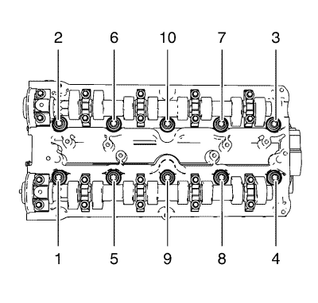
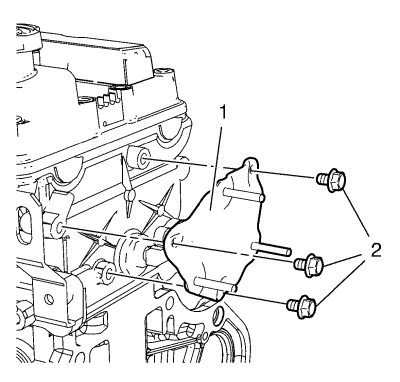
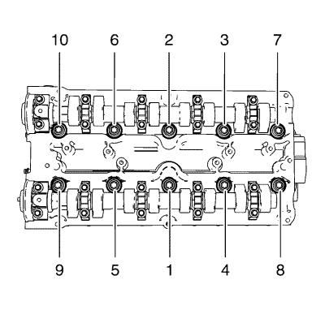

Sustitución de la culata
Herramientas especiales
EN-45059 Kit de goniómetro.
Si desea informarse sobre herramientas regionales equivalentes, consultar
Herramientas especiales : 1.6L LXT .
Procedimiento de desmontaje
- Abra el capó.
- Desmontar la tapa del árbol de levas. Consultar Sustitución de la tapa de los árboles de levas .
- Retire el colector de escape. Consultar
Sustitución del colector de escape : 1.6L LXT → 2.0L Diésel LLW → 1.6L LDE, LXV y 1.8L 2H0 .
- Extraiga la cubierta trasera de la correa de distribución. Consultar Sustitución de la tapa trasera de la correa de distribución .
- Desmonte el termostato del refrigerante del motor. Consultar
Sustitución del termostato de refrigerante del motor : 1.6L LXT → 2.0L Diésel LLW → 1.6L LDE, LXV, LLU y 1.8L 2H0 .
- Desmonte el soporte de ajuste del generador. Consultar Desmontaje del soporte de ajuste del generador .
- Desmonte el anclaje del colector de admisión. Consultar Desmontaje del refuerzo del colector de admisión .

- Retire los 10 tornillos de la culata en el orden que se indica.
| 8.1. | Afloje los 10 tornillos 90°. |
| 8.2. | Afloje los 10 tornillos 180°. |
Nota: Se necesitan dos mecánicos.
- Desmonte la culata y colóquela en base adecuada.
- Retire la junta de la culata.
- Desmonte el colector de admisión de la culata. Consultar Desmontaje del colector de admisión .
- Desmonte el adaptador de recirculación de gases de escape. Consultar Sustitución del adaptador de la válvula de recirculación de gases de escape .
- Desmonte la bobina de encendido. Consultar Desmontaje de la bobina de encendido .

- Retire las 3 tuercas (2) del soporte de la bobina de encendido.
- Retire el soporte (1) de la bobina de encendido.
- Para el desmontaje de la culata. Consultar Desmontaje de la culata .
Procedimiento de montaje
- Para el montaje de la culata. Consultar Montaje de la culata .
- Monte el soporte de la bobina de encendido (1).
- Monte las 3 tuercas del soporte de la bobina de encendido (2).
- Desmonte la bobina de encendido. Consultar Montaje de la bobina de encendido .
- Monte el adaptador de recirculación de gases de escape. Consultar Sustitución del adaptador de la válvula de recirculación de gases de escape .
- Desmonte el colector de admisión de la culata Consultar Montaje del colector de admisión .
- Limpie las superficies de sellado.
- Compruebe que la superficie sea plana.
- Monte la junta de culata.
Nota: Se necesitan dos mecánicos.
- Monte la culata.
Precaución:Consulte Precaución con las fijaciones en la sección Prólogo.

Nota: Observe el orden de apriete correcto.
- Coloque los tornillos de culata NUEVOS.
- Apriete los pernos de 5 veces. Utilice el kit de goniómetro EN-45059.
| • | Primer paso a 25 N·m (18 lib. pie) |
- Monte el anclaje del colector de admisión. Consultar Montaje del refuerzo del colector de admisión .
- Monte el soporte de ajuste del generador. Consultar Montaje del soporte de ajuste del generador .
- Monte el termostato del refrigerante del motor. Consultar
Sustitución del termostato de refrigerante del motor : 1.6L LXT → 2.0L Diésel LLW → 1.6L LDE, LXV, LLU y 1.8L 2H0 .
- Monte la tapa trasera de la correa de distribución. Consultar Sustitución de la tapa trasera de la correa de distribución .
- Monte el colector de escape. Consultar
Sustitución del colector de escape : 1.6L LXT → 2.0L Diésel LLW → 1.6L LDE, LXV y 1.8L 2H0 .
- Monte la tapa del árbol de levas. Consultar Sustitución de la tapa de los árboles de levas .
- Cierre el capó.
| © Copyright Chevrolet. Reservados todos los derechos |